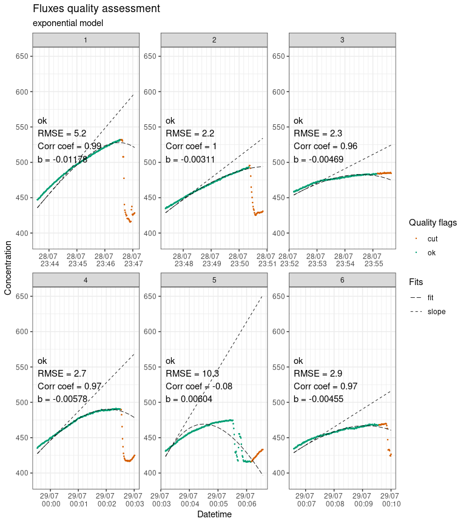

Note: fluxible is still in an early phase, it is fully functional but can be improved in many ways. Please get in touch for any problems or suggestions.
The Fluxible R package is made to transform any dataset of gas concentration over time into a gas flux dataset. It was originally made to be used with a closed loop chamber system connected to a gas analyzer. A function for use with a tent (taking leakage into account) is in development (see further developments).
The goal of fluxible is to provide a workflow that removes individual evaluation of each flux, reduces risk of bias, and makes it reproducible. Users set specific data quality standards and selection parameters as function arguments that are applied to the entire dataset. The package runs the calculations automatically, without prompting the user to take decisions mid-way, and provides quality flags and plots at the end of the process for a visual check. This makes it easy to use with large flux datasets and to integrate into a reproducible workflow. Using the Fluxible R package makes the workflow reproducible, increases compatibility across studies, and is more time efficient.
For a quick overview of how the package works, you can look at the poster that was presented at the European Geosciences Union Annual Meeting 2024.
Installation
Fluxible can be installed from CRAN.
install.packages("fluxible")You can install the development version of fluxible from the GitHub repo with:
# install.packages("devtools")
devtools::install_github("plant-functional-trait-course/fluxible")Short example
library(fluxible)
conc <- flux_match(
co2_df_short,
record_short
)
slopes <- flux_fitting(
conc,
fit_type = "exp",
end_cut = 30
)
#> Cutting measurements...
#> Estimating starting parameters for optimization...
#> Optimizing fitting parameters...
#> Calculating fits and slopes...
#> Done.
slopes_flag <- flux_quality(
slopes
)
#>
#> Total number of measurements: 6
#>
#> ok 6 100 %
#> discard 0 0 %
#> zero 0 0 %
#> weird_flux 0 0 %
#> start_error 0 0 %
#> no_data 0 0 %
#> force_ok 0 0 %
flux_plot(
slopes_flag,
f_ylim_lower = 390,
f_ylim_upper = 650,
facet_wrap_args = list(
ncol = 3,
nrow = 2,
scales = "free"
)
)
#> Plotting in progress
fluxes <- flux_calc(
slopes_flag,
slope_col = "f_slope_corr",
conc_unit = "ppm",
flux_unit = "mmol",
cols_keep = c("turfID", "type"),
cols_ave = c("temp_soil", "PAR"),
cut_col = "f_cut",
keep_arg = "keep"
)
#> Cutting data according to 'keep_arg'...
#> Averaging air temperature for each flux...
#> Creating a df with the columns from 'cols_keep' argument...
#> Creating a df with the columns from 'cols_ave' argument...
#> Calculating fluxes...
#> R constant set to 0.082057
#> Concentration was measured in ppm
#> Fluxes are in mmol/m2/h
fluxes_gep <- flux_gep(
fluxes,
id_cols = "turfID",
flux_col = "flux",
type_col = "type",
datetime_col = "datetime",
par_col = "PAR",
cols_keep = c("temp_soil")
)
#> Warning in flux_gep(fluxes, id_cols = "turfID", flux_col = "flux", type_col = "type", :
#> NEE missing for measurement turfID: 156 AN2C 156
fluxes_gep
#> # A tibble: 9 × 15
#> datetime turfID PAR type flux f_fluxID temp_soil f_slope_calc
#> <dttm> <chr> <dbl> <chr> <dbl> <fct> <dbl> <dbl>
#> 1 2022-07-28 23:47:22 74 WN2C… 2.19 GEP 10.3 <NA> 10.7 NA
#> 2 2022-07-28 23:59:32 109 AN3… 1.87 GEP -27.2 <NA> 10.8 NA
#> 3 2022-07-29 00:06:35 29 WN3C… 1.61 GEP NA <NA> 12.2 NA
#> 4 2022-07-28 23:43:35 156 AN2… 1.88 ER 47.7 1 10.8 0.775
#> 5 2022-07-28 23:47:22 74 WN2C… 2.19 NEE 31.0 2 10.7 0.504
#> 6 2022-07-28 23:52:10 74 WN2C… 2.04 ER 20.7 3 10.7 0.337
#> 7 2022-07-28 23:59:32 109 AN3… 1.87 NEE 41.5 4 10.8 0.676
#> 8 2022-07-29 00:03:10 109 AN3… 1.69 ER 68.7 5 10.5 1.12
#> 9 2022-07-29 00:06:35 29 WN3C… 1.61 NEE 26.1 6 12.2 0.425
#> # ℹ 7 more variables: chamber_volume <dbl>, tube_volume <dbl>,
#> # atm_pressure <dbl>, plot_area <dbl>, temp_air_ave <dbl>,
#> # volume_setup <dbl>, model <chr>Further developments
Dissemination
Gaudard, J., Telford, R., Vandvik, V., and Halbritter, A. H.: Fluxible: an R package to calculate ecosystem gas fluxes in a reproducible and automated workflow., EGU General Assembly 2024, Vienna, Austria, 14–19 Apr 2024, EGU24-956, https://doi.org/10.5194/egusphere-egu24-956, 2024.